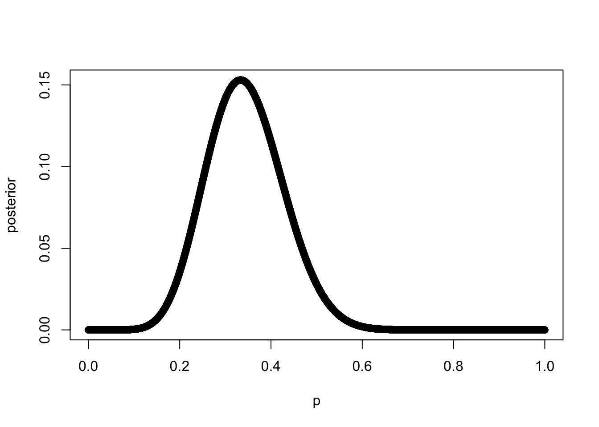

Attaching package: 'magrittr'
The following object is masked from 'package:purrr':
set_names
The following object is masked from 'package:tidyr':
extract
library(bayesrules)library(rethinking)
Loading required package: rstan
Loading required package: StanHeaders
rstan (Version 2.21.7, GitRev: 2e1f913d3ca3)
For execution on a local, multicore CPU with excess RAM we recommend calling
options(mc.cores = parallel::detectCores()).
To avoid recompilation of unchanged Stan programs, we recommend calling
rstan_options(auto_write = TRUE)
Attaching package: 'rstan'
The following object is masked from 'package:magrittr':
extract
The following object is masked from 'package:tidyr':
extract
Loading required package: cmdstanr
This is cmdstanr version 0.5.3
- CmdStanR documentation and vignettes: mc-stan.org/cmdstanr
- CmdStan path: /Users/marcoe02/.cmdstan/cmdstan-2.30.1
- CmdStan version: 2.30.1
A newer version of CmdStan is available. See ?install_cmdstan() to install it.
To disable this check set option or environment variable CMDSTANR_NO_VER_CHECK=TRUE.
Loading required package: parallel
rethinking (Version 2.21)
Attaching package: 'rethinking'
The following object is masked from 'package:rstan':
stan
The following object is masked from 'package:purrr':
map
The following object is masked from 'package:stats':
rstudent
theme_set(theme_bw())set.seed(2020)
Binomial estimation
Linear regression
Drawing the owl:
Goal/Question/Estimand: State a clear question (inferential or descriptive)
Describe association between (adult) weight and height
How does height influences weight?
Scientific model: Sketch the causal assumptions
Height → Weight ← [Unobserved]
Weight is some function of height [and other unobserved variables/influences] \(W = f(H,U)\)
Statistical model: Use the sketch to define a generative model
What is this function \(f\) ?
For example, a linear function: \(W = \beta H + U\)
It should be able to generate realistic data
XXX: Use the generative model to build an estimator
Validate model
Analyze data
A generative model is a statistical model of the conditional probability of the observable X, given a target y, symbolically, \(P(X | Y = y)\).
A discriminative model is a statistical model of the conditional probability of the target Y, given an observation x, symbolically, \(P(Y | X = x)\).
A generative model (e.g., naive bayes) explicitly models the joint probability distribution \(p(x,y)\) and then uses the Bayes rule to compute \(p(y \mid x)\). On the other hand, a discriminative model (e.g., logistic regression) directly models \(p(y \mid x)\).
An estimator is a rule for calculating an estimate of a quantity of interest (the estimand) based on observed data: thus the rule (the estimator), the quantity of interest (the estimand) and its result (the estimate) are distinguished. For example, the sample mean is a commonly used estimator of the population mean (the estimand).
Generative model
sim_weight <-function(H, beta, sd) { U =rnorm(length(H), 0, sd) W = beta * H + Ureturn(W)}n =100H =runif(n, min =130, max =170)W =sim_weight(H, beta =0.5, sd =5)plot(W ~ H, col ="red")

Conventional generative/statistical model notation
List the variables
Define each variable as a deterministic or distributional function of the other variables